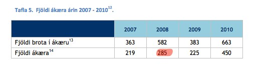
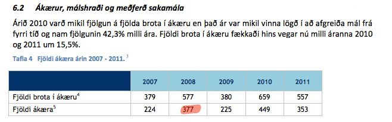

Afbrotatölfræði er gríðarlega mikilvæg. Það er reyndar mín skoðun að öll tölfræði sé gríðarlega mikilvæg, en það deila henni kannski ekki allir. En við getum verið sammála um að afbrotatölfræði sé mikilvæg. Með aðgangi að tölfræði um afbrot má meta forvarnastarf, átta sig á því í hvaða átt samfélagið er að fara, svo dæmi séu tekin.
Hér á landi birtir Ríkislögreglustjóri árlega skýrslu sem ber heitið „Afbrotatölfræði“ auk mánaðarlegra, stuttra skýrslna, sem og sértækar skýrslur. Auk þessa birta einstök lögregluumdæmi annaðhvort sértækar tölfræðiskýrslur, eins og gert er í umdæmi lögreglunnar á höfuðborgarsvæðinu, eða ársskýrslur þar sem tölfræði er fyrirferðarmikil.
Reyndar birta fæst umdæmi ársskýrslur. Þannig er engar slíkar skýrslur að finna á heimasíðum umdæmanna á Akureyri, Akranesi, Blönduósi, Borgarnesi, Eskifirði, Húsavík, Hvolsvelli eða Sauðárkróki. Í tveimur umdæmum er einungis að finna nokkurra ára gamlar skýrslur; Vestmannaeyjum (2009) og Snæfellsnesi (2008). Í raun má segja að birting ársskýrslna sé einungis á góðu róli í áðurnefndu umdæmi á höfuðborgarsvæðinu (nýjast frá 2011), Vestfjörðum (nýjast frá 2010), Suðurnesjum (nýjast frá 2011), Seyðisfirði (nýjast frá 2011) og svo Ríkislögreglustjóra (nýjast frá 2010).
Lítum nú aðeins á tölfræði úr umdæmi lögreglunnar á Suðurnesjum, sem má finna í ársskýrslum, og þá sérstaklega úr þeirri deild sem sér um mál tengdum Flugstöð Leifs Eiríkssonar (FLE) á Keflavíkurflugvelli. Hér hef ég tekið saman þær tölur úr skýrslum áranna 2009, 2010 og 2011:
| 2001 | 2002 | 2003 | 2004 | 2005 | 2006 | 2007 | 2008 | 2009 | 2010 | 2011 |
| Heildarfjöldi farþega um FLE | | | | | | | | 1.991.338 | 1.658.419 | 1.791.143 | 2.122.017 |
| Heildarfjöldi farþega um ytri landamæri | 533.498 | 572.871 | 559.124 | 748.165 | 855.347 | 915.842 | 881.739 | 733.736 | 620.367 | 789.897 | 987.557 |
| Fjöldi útgefinna áritana | | | | | | | | 33 | 35 | 33 | 34 |
| Frávísanir á ytri landamærum | | | | | | | | 4 | 4 | 12 | 4 |
| Frávísanir á innri landamærum | | | | | | | | 7 | 32 | 19 | 7 |
| SIS/Interpol smellir | | | | | | | | 11 | 14 | 7 | 8 |
| Skjalafölsunarmál | | | 42 | 28 | 19 | 7 | 7 | 30 | 30 | 23 | 33 |
| Fjöldi skjalrannsóknarskýrslna | 3 | 11 | 49 | 28 | 33 | 23 | 20 | 50 | 56 | 37 | 64 |
| Fjöldi hælisleitenda í FLE | 33 | 26 | 36 | 19 | 20 | 14 | 4 | 23 | 17 | 12 | 38 |
| Ítarleg skoðun á öðru stigi (ytri landamæri) | 262 | 306 | 144 | 382 | 568 | 272 | 311 | 351 | 330 | 294 | 414 |
| Skýrslumál | 126 | 212 | 150 | 133 | 116 | 61 | 62 | 79 | 94 | 91 | 77 |
Skoðum sérstaklega á skjalafölsunarmálin (sem eru fölsuð skilríki sem einstaklingar hafa framvísað við landamæraeftirlit).
Í frétt Morgunblaðsins frá 27. apríl á þessu ári segir:
Allt árið 2011 komu 33 fölsunarmál upp í flugstöðinni sem var 43% aukning frá árinu 2010, samkvæmt upplýsingum frá rannsóknardeild lögreglunnar á Suðurnesjum.
Fréttin er unnin upp úr nánast samhljóða frétt á vef lögreglunnar dagsett sama dag. Nú er það vissulega rétt að aukning skjalafölsunarmála er 43%. En eins og eftirfarandi súlurit sýnir er óvarlegt að áætla að árið 2011 hafi verið óvenjulegt í þessu sambandi. Miklu frekar má færa fyrir því rök að árið 2010 hafi verið óvenjulegt vegna þess hve fá mál vegna falsaðra ferðaskilríkja komu til kasta embættisins.
En hversu áræðanlegar eru svona tölur? Það segir sig sjálft að afbrotatölfræði sem kemur einungis frá lögreglu, og er ekki staðfest af óháðum aðila, verður að taka með fyrirvara . Það getur verið lögreglu í hag að ýkja, eða draga úr, tölfræði, t.d. í þeim tilgangi að tryggja sér aukið fjármagn.
Í ársskýrslum lögreglunnar á Suðurnesjum er ýmislegt skrítið.
Í hverri skýrslu er tekin saman fjöldi ákæra hvers árs. Til samanburðar er birtur fjöldi nokkurra ára á undan. Í skýrslunni fyrir árið 2009 er taflan svona:

Samkvæmt henni voru ákærur árið 2008 samtals 545. Í skýrslunni árið 2010 er sambærileg tafla svona:

og í skýrslunni fyrir árið 2011:

Hver þessara talna er rétt? Voru ákærur embættisins árið 2008 545? Eða 287? Eða 377?
Tölur yfir sektargerðir eru einnig undarlegar. Skýrslan 2009 :
2010:
2011:
Svona lítur þetta út á súluriti:
Hvað getur útskýrt þetta misræmi? Er hægt að taka mark á tölum um starfsemi lögreglunnar á Suðurnesjum?


{kind=link}